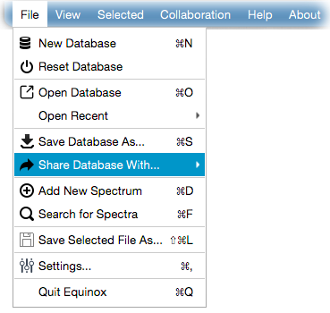

You can share your whole current database with other online and available users. For this, click - File → Share Database With...
and
select a user to share the database. The same functionality is also available via - Collaboration
menu.

Recipient users will receive a notification of the incoming database. They will be able to save the shared database as a zip archive.